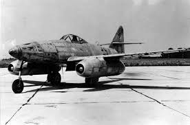

Истребитель Messerschmitt Me.262 был первым серийным реактивным истребителем в мире. Несмотря на то, что разработка самолета началась еще до начала Второй мировой войны, в серию он попал лишь в 1944. Стоит отметить, что в столь долгом цикле разработки виноваты не инженеры Мессершмитта, а разработчики двигателей из BMW. Первоначально они обещали создать серийный образец реактивного двигателя тягой 600 килограмм уже к концу 1939 года, но справились с этой задачей лишь в 1943 году. Однако даже после запуска серийной машины руководство авиационной промышленности Германии не спешило развертывать масштабное производство реактивного истребителя Me.262A1. Они опасались технических рисков, связанных с производством и эксплуатацией новых, плохо изученных машин. Кроме того, если первоначально самолет проектировался как истребитель-перехватчик, то позднее по решению Гитлера он был переделан в бомбардировщик Me.262A2, что не лучшим образом сказалось на эффективности использования потенциала уникальной машины. Большая часть самолетов была произведена в 1945 году, всего было построено 1430 машин этого типа.